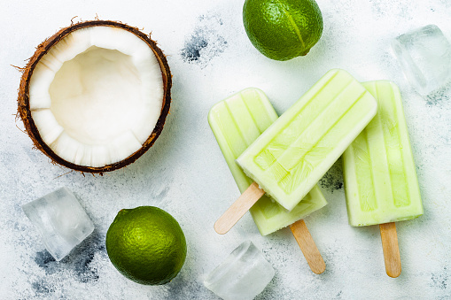

Kermainen ja täyteläisen ihana herkku. Smoothie on makea, mutta myös raikas ja kirpeä limen ansiosta. Avokado ja kookosmaito tekevät smoothiesta kermaisen ja täyteläisen, kun taas kookoshiutaleet antavat siihen mukavaa purutuntumaa. Tämä smoothie sopii erinomaisesti aamupalaksi, välipalaksi tai vaikkapa terveelliseksi jälkiruoaksi.
| 1/2 | kookosmaitotölkki |
| 1 | banaani |
| 1/2 | avokado |
| 1/2 | lime |
| 1 rkl | hunajaa |
| 1/2 dl | kookoshiutaleita |
| 1/2 dl | vettä |
| muutama | jääpalanen |
Vinkki: Voit koristella smoothien kookoshiutaleilla ja limelohkoilla ennen tarjoilua.